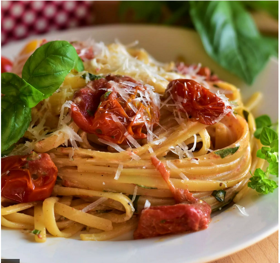

Roasted Cherry Tomato Pasta

Ingredients
- 2 pounds red cherry tomatoes, halved
- ½ pound tomatoes, roughly chopped
- 3 cloves garlic, thinly sliced
- 3 tablespoons chicken broth
- 1 tablespoon olive oil
- 1 tablespoon balsamic vinegar
- 1 teaspoon red pepper flakes
- ¾ teaspoon salt
- ½ teaspoon freshly ground black pepper
- ¼ cup julienned fresh basil leaves
- 2 tablespoons chopped flat-leaf parsley
- 1 tablespoon chopped fresh oregano
- 12 ounces whole wheat linguine
- ½ (16 ounce) container low-fat ricotta cheese
- ½ cup finely shredded Pecorino Romano cheese
steps
- Preheat the oven to 350 degrees F (175 degrees C).
-
Combine all tomatoes, garlic, chicken broth, olive oil, balsamic
vinegar, red pepper flakes, salt, and pepper in a large, glass baking
dish; toss to coat.
-
Roast in the middle of the preheated oven, stirring regularly, until
tomatoes are tender, about 45 minutes. Remove from the oven and stir in
basil, parsley, and oregano.
-
When the tomatoes have been roasting for about 35 minutes, bring a large
pot of lightly salted water to a boil. Cook linguine at a boil until
tender yet firm to the bite, 5 to 7 minutes (cook for 2 minutes less
than package directions.) Drain and return to the pot.
-
Add the roasted tomatoes and herbs to the linguine and cook over
medium-low heat for 2 minutes. Add ricotta cheese and stir until melted
and smooth.
- Serve topped with Pecorino Romano cheese.
sub-home